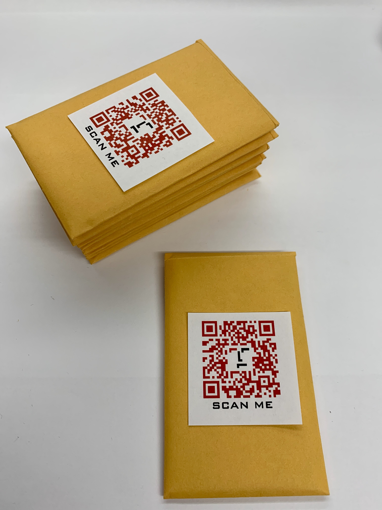
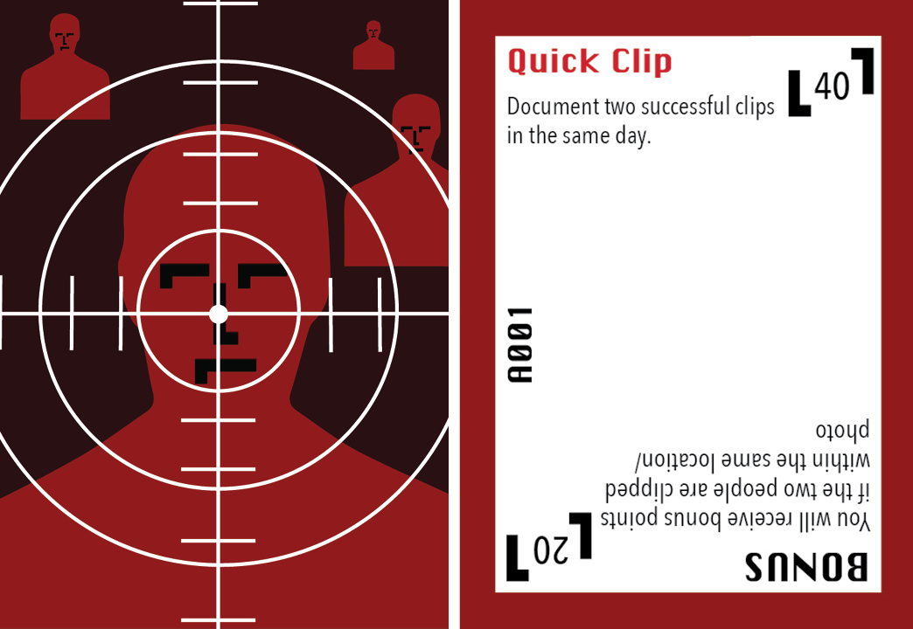
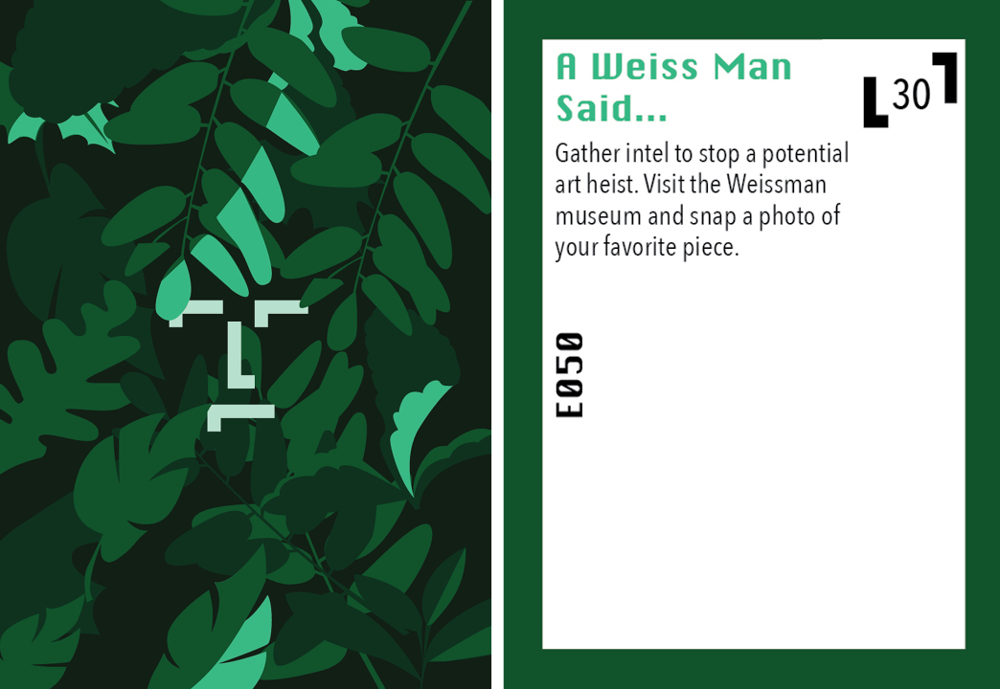
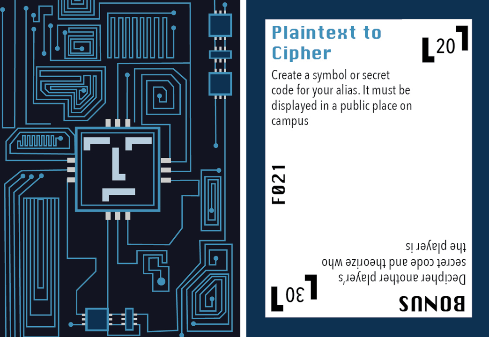
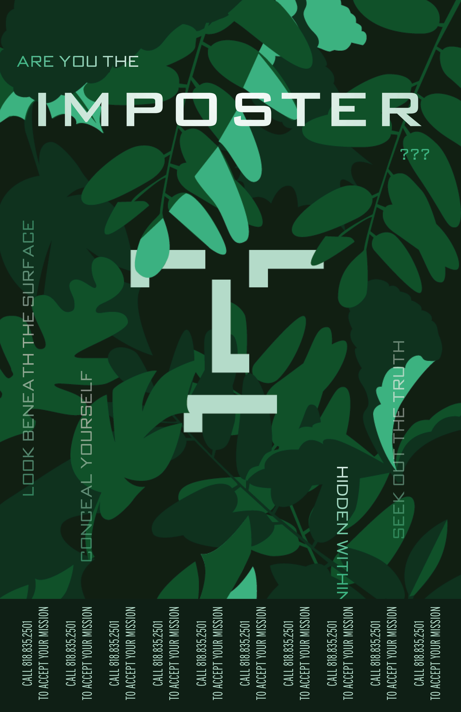
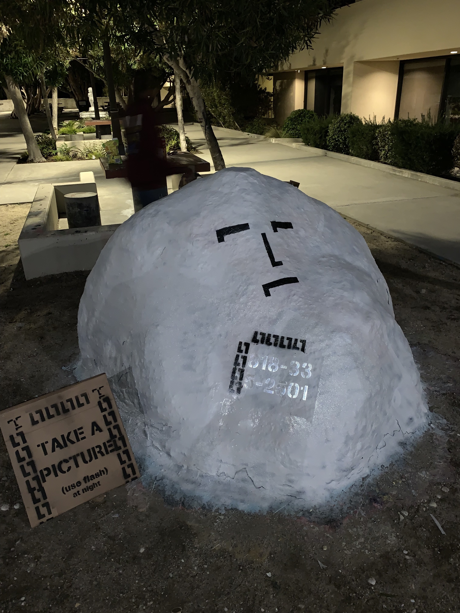

March 22nd
Imposter
Genesis Lab Project

Imposter is a spy themed card game designed to help students who feel lonely on campus, find activities that will introduce them to people, and places they might not know about otherwise. Students at Pepperdine often look like they have their lives together externally, which makes those who don’t feel like they have every minute of every day planned out, feel like they couldn’t be spend time with those kind of people on campus. However, everyone at Pepperdine is exactly the same. Trying to get through classes, work, meals, and activities, one day at a time. Imposter stems from looking at people and seeing someone they are not.
How to Play


In order to be inducted into the agency, people call a phone number hidden on campus and receive their mission packet. Inside the pack there are variety of cards with certain types of challenges varying in difficulty as people become more involved with the game. They accrue points by completing the tasks on the card and upload the evidence of their uploaded to a leaderboard and top five players get to participate in an experience that caters to their interests. We wanted to shy away from monetary prizes because the end goal of the game was not to get things but to fully be able to enjoy and experience four years at Pepperdine.
Initiation Pack
Inside the initiation packet, there are nine cards and the initiation card. It is then hidden somewhere on campus and are given a clue to find it.
Assassin Cards
As the name implies, assassin cards revolve around elimination other people. They do not permanently remove other people from the game, but they do suspend their points for a week and which takes them out of the running for the weekly prize. However, the points earned during the week they were suspended are added to the next week and can be turned into a strategy.
Explorer Cards
Explorer cards allow you to earn points by completing tasks like geocaching, experiential tasks (eating scary/foreign food), attending campus rec events, and attendance of in-game events. These cards are targeted at people who enjoy experiencing new things, but might not know how to find some of the great things Malibu and LA have to offer.
Fabricator Cards
Fabricator cards involve, puzzles, decoding, and creating. These are for people who like creating, thinking and learning new skills.
Design Style
Since our game was spy themed, we wanted to create an element of intrigue and mystique in our design. We looked at one of the most famous spies, James Bond and the 50’s time period. We combined late modern era design and the popular trend of flat style.
Logo
The logo was fun because it was simple enough to do anything we wanted with it. It looks a bit like a little man, but we could also create custom lettering out of it. The logo is made with a square grid. Each piece of the logo is identical with the proportions of 4 by 2.
Dont's

Don't change proportions of the rectangles
Don't change space between each of the rectangles
Don't have different proportions of the rectangles

Don't have any lines that are not vertical and horizontal.
Logotype
The logo type is created in the same way as the logo. The only change is that the descender is one square longer that the regular logo to create enough space for each character.
Colors

Black, white, and red are the main colors for the logo. Thes rest of the art is done in monochromatic color schemes.
Marketing Uses
Poster
As the picture describes, the phone number is on the rock in reflective paint. You can't see it in the day, but taking a photo with flash at night makes the number appear.
Although I was one of the leads on Imposter, working on the concept, details, and art, there was an entire team of amazing people that worked with me at the Genesis Lab. Landon Phillips my supervisor and the one who bounced around ideas with me until I we turned ourselves in circles to fix issues with the concept, and created the logo; Chanse Alexander who created sketches to be vectorized and helped me with colors and concepts for the cards, Esther Wong our computer science expert; Genesis Trejo the pre-med student that became a temporary lawyer; Isabel Hao and Russell Wijaya who stayed up until three helping finish details with fast approaching deadlines; Christine Deng the other lead on the project; Anna Speth co-director of the Genesis Lab and the rest of the team Alex Ksajikian, Treet Allison, and Jane Yi, who did everything else in the Genesis Lab so we could work on this project.